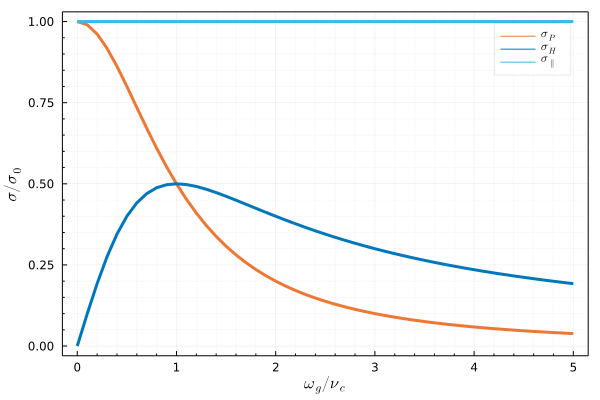
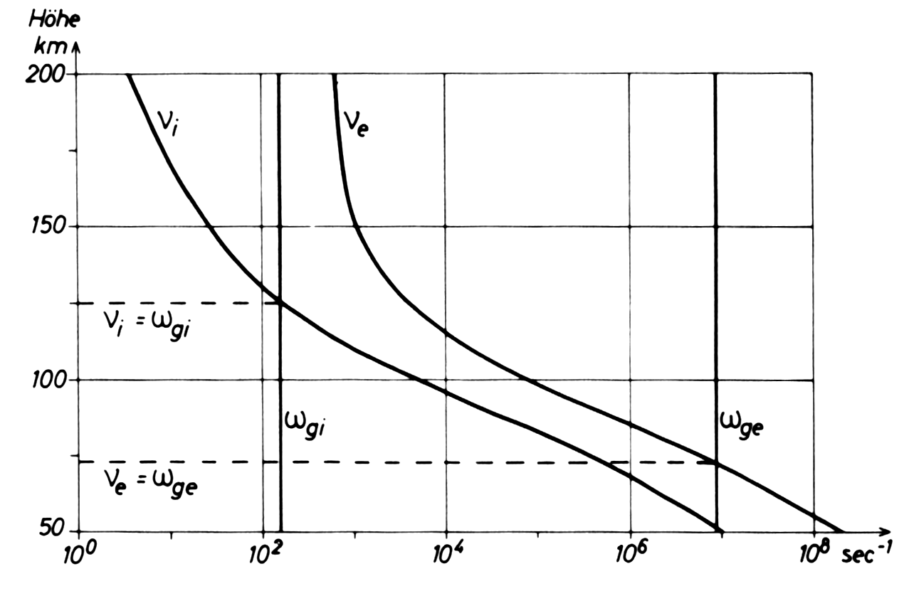
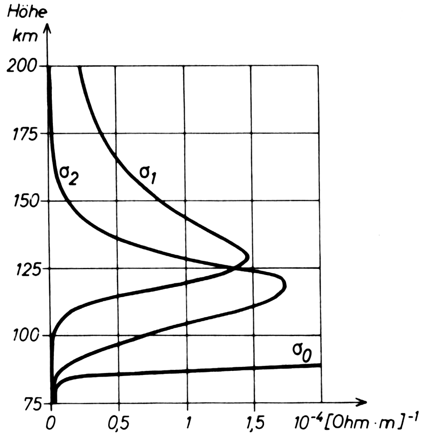
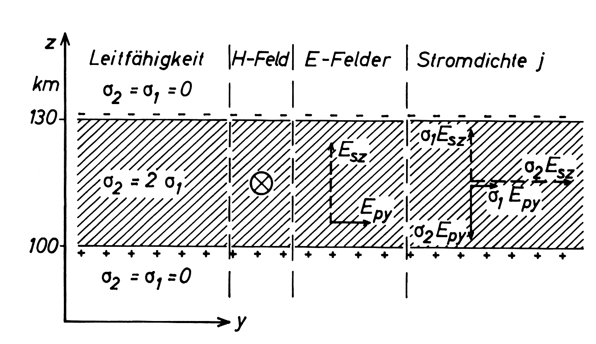

12 Leitfähigkeit
Wir untersuchen den Mechanismus der elektrischen Leitfähigkeit in schwach ionisierten Gasen.
Folgende Annahmen werden getroffen:
- der Beitrag von Ionen mit Ladung größer als 1 ist vernachlässigbar,
- die Teilchenzahldichte der Ionen entspricht der der Elektronen, d.h., \(n_i = n_e\),
- für die betrachteten Höhen von 50 bis 1000 km ist die Neutralgasdichte deutlichhöher als die Plasmadichte.
Wir gehen zunächst von einem Ensemble von Einzelteilchen aus und betrachten wie üblich die Bewegungsgleichung. Enthält das Gas Ionen der Ladung \(q=+e\) und Elektronen der Ladung \(q=-e\), ergibt sich die elektrische Stromdichte zu
\[ \mathbf j = (n_i \mathbf v_i - n_e \mathbf v_e) e. \]
Die Ströme werden durch elektrische Felder hervorgerufen, und es gilt das Ohmsche Gesetz \(\mathbf j = \sigma \mathbf E\).
Unabhängig von der Richtung der Anfangsgeschwindigkeit wird sich die Bewegungsrichtung bei Abwesenheit von Magnetfeldern an die elektrische Feldrichtung angleichen.
12.1 Kollisionen
Die Teilchengeschwindigkeiten sind abhängig von ihrer Richtung zum Magnetfeld, deshalb wird die elektrische Leitfähigkeit bei Anwesenheit eines Magnetfeldes anisotrop.
Ein elektrisches Feld parallel zum Magnetfeld ergibt sich für ein Teilchen die konstante Beschleunigung \(q \mathbf E / m\).
Bei Anwesenheit vieler Teilchen wird Bewegung des Einzelteilchens durch Stöße gebremst. Es stellt sich mittlere Geschwindigkeit ein.
Das Teilchen verliert bei jedem Stoß die durch das elektrische Feld erlangte Geschwindigkeit, kommt also zum Stillstand. Die Zeit zwischen zwei aufeinanderfolgenden Stößen sei \(\tau\).
Unter der (unrealistischen) Annahme einer konstanten Stoßzeit \(\tau_1\) erhalten wir für die mittlere Geschwindigkeit
\[ \overline{\mathbf v}_1 = \frac{1}{\tau_1}\int\limits_0^{\tau_1} \frac{q \mathbf E_\|}{m} t \,\mathrm d t = \frac{1}{2} \frac{q \mathbf E_\|}{m} \tau_1 \]
Für eine weitere Stoßzeit \(\tau_2\) erhalten wir \(\overline{\mathbf v}_2 = \frac{1}{2} \frac{q \mathbf E_\|}{m} \tau_2\) .
Die mittlere Stoßzeit ist \(\overline\tau = (\tau_1 + \tau_2) / 2\).
Die mittlere Geschwindigkeit beträgt
\[ \overline{\mathbf v}_{1,2} = \frac{\tau_1 \overline{\mathbf v}_1 + \tau_2 \overline{\mathbf v}_2}{\tau_1 + \tau_2} = \underbrace{\frac{1}{2}}_{p(\tau_1)} \frac{\tau_1}{\overline \tau}\overline{\mathbf v}_1 + \underbrace{\frac{1}{2}}_{p(\tau_2)} \frac{\tau_2}{\overline \tau}\overline{\mathbf v}_2 \]
Die Faktoren \(1/2\) entsprechen der Wahrscheinlichkeit, ob im entsprechenden Zeitintervall ein Stoß erfolgt oder nicht. Die 50/50-Chance für beliebige \(\tau\) ist eher unrealistisch.
Die Stoßzeiten sind nicht konstant, sondern statistisch verteilt.
Wir können die mittlere Geschwindigkeit aus einer Wahrscheinlichkeitsverteilung ableiten:
\[ \overline{\mathbf v} = \int\limits_0^\infty p(\tau) \frac{\tau}{\overline \tau} \frac{1}{2}\frac{q \mathbf E}{m} \tau \, \mathrm d\tau \]
Mit der Annahme, dass die Zeit bis zur nächsten Kollision nicht von in der Vergangenheit erfolgten Stößen abhängt, kann man eine Exponentialverteilung ansetzen.
Die Wahrscheinlichkeit \(p(\tau)\), dass die Stoßzeit im Intervall \((\tau, \tau + \mathrm d\tau)\) liegt, betrage
\[ p(\tau) = \frac{1}{\overline\tau} e^{- \tau / \overline\tau}. \]
Diese Wahrscheinlichkeitsverteilung hat einen Mittelwert und eine mittlere quadratische Abweichung von \(\overline\tau\).
Damit erhält man als mittlere Geschwindigkeit eines Einzelteilchens
\[ \overline{\mathbf v} = \frac{1}{\overline\tau}\int\limits_0^\infty \left \{ \int\limits_0^\tau \frac{q \mathbf E_\|}{m} t \,\mathrm dt \right\} p(\tau) \mathrm d \tau = \frac{q \mathbf E_\|}{m} \overline\tau. \]
Für den Fall, dass die mittlere Geschwindigkeit repräsentativ für alle geladenen Teilchen des betrachteten Typs ist, benötigen wir nur die Teilchenzahldichten \(n_i\) und \(n_e\) zur Bestimmung der Stromdichte.
12.2 Plasmaleitfähigkeit
Wir starten mit der starken Vereinfachung, dass sich nur die Elektronen bewegen. Alle Kollisionspartner sind in Ruhe.
\[ m \frac{ \partial \mathbf{v} }{ \partial t } = q (\mathbf{E} + \mathbf{v} \times \mathbf{B}) - m \nu_{c} (\mathbf{v} - \mathbf{u}) \] \(\nu_{c}\): Kollisionsfrequenz \(\mathbf{u}\): Geschwindigkeit der Kollisionspartner \(\mathbf{v}\): Geschwindigkeit des geladenen Teilchens
12.2.1 \(\mathbf{B} = \mathbf{0}\), \(\mathbf{u}=\mathbf{0}\)
Elektronen mit \(\mathbf{v}_{e}\), Ionen und Neutralgas in Ruhe \[ \mathbf{E} = - \frac{m_{e} \nu_{c}}{e} \mathbf{v}_{e} \] Stromdichte: \[ \mathbf{j} = -e n_{e} \mathbf{v}_{e} \] Zusammenfassen führt auf \[ \mathbf{j} = \frac{e^{2}n_{e}}{m \nu_{c}} \mathbf{E} \]
12.2.2 \(\mathbf{B} \ne \mathbf{0}\), \(\mathbf{u}=\mathbf{0}\)
Plasma bewegt sich mit Geschwindigkeit \(\mathbf{v}\) durch Magnetfeld. Wir addieren den Term \(\mathbf{v}\times \mathbf{B}\). \[ \mathbf{j} = \sigma_{0}(\mathbf{E} + \mathbf{v}\times \mathbf{B}) \] \[ \sigma_{0} = \frac{e^{2}n_{e}}{m \nu_{c}} \] \(\sigma_{0}\): Plasmaleitfähigkeit, Parallelleitfähigkeit
\[ \mathbf{E} + \mathbf{v}_{e} \times \mathbf{B} = - \frac{m_{e} \nu_{c}}{e} \mathbf{v}_{e} \] Erweitertes Ohmsches Gesetz \[ \mathbf{j} = \sigma_{0}\mathbf{E} - \frac{\sigma_{0}}{n_{e} e} \mathbf{j}\times \mathbf{B} \] Annahme: \(\mathbf{B} = B \hat{\mathbf{z}}\). Kreisfrequenz der Gyrationsbewegung ist vorzeichenbehaftet wegen \(q=-e\), womit \[ \omega_{g} = \frac{q B}{m} = -\frac{e B}{m_{e}} \] Dann ist \[ \mathbf{j}\times \mathbf{B} = \begin{pmatrix} +B_{z}j_{y} \\ -B_{z}j_{x} \\ 0 \end{pmatrix} \] Komponenten von \(\mathbf{j}\) \[ \begin{align} j_{x} & = \sigma_{0}E_{x} + \frac{\omega_{g}}{\nu_{c}} j_{y} \\ j_{y} & = \sigma_{0}E_{y} - \frac{\omega_{g}}{\nu_{c}} j_{x} \\ j_{z} & = \sigma_{0} E_{z} \end{align} \] Zusammengefasst: \[ \begin{align} j_{x} & = \frac{\nu_{c}^{2}}{\nu_{c}^{2} + \omega_{g}^{2}}\sigma_{0}E_{x} + \frac{\omega_{g}\nu_{c}}{\nu_{c}^{2} + \omega_{g}^{2}}\sigma_{0}E_{y} \\ j_{y} & = \frac{\nu_{c}^{2}}{\nu_{c}^{2} + \omega_{g}^{2}}\sigma_{0}E_{y} - \frac{\omega_{g}\nu_{c}}{\nu_{c}^{2} + \omega_{g}^{2}}\sigma_{0}E_{x} \\ j_{z} & = \sigma_{0}E_{z} \end{align} \] Dies ist ein System von Gleichungen \[ \mathbf{j} = \boldsymbol{\sigma} \mathbf{E} \] mit \[ \boldsymbol{\sigma} = \begin{pmatrix} \sigma_{P} & -\sigma_{H} & 0 \\ \sigma_{H} & \sigma_{P} & 0 \\ 0 & 0 & \sigma_{\parallel} \end{pmatrix} \] wobei \[ \begin{align} \sigma_{P} & = +\frac{\nu_{c}^{2}}{\nu_{c}^{2} + \omega_{g}^{2}}\sigma_{0} \\ \sigma_{H} & = -\frac{\omega_{g}\nu_{c}}{\nu_{c}^{2} + \omega_{g}^{2}}\sigma_{0} \\ \sigma_{\parallel} & = \sigma_{0} = \frac{n_{e}e^{2}}{m_{e}\nu_{c}} \end{align} \] Allgemein hat \(\mathbf{B}\) einen beliebigen Winkel bzgl. der Achsen des kartesischen Koordinatensystems. Dann gilt für die Stromdichte der Elektronen \[ \mathbf{j} = \sigma_{\parallel} \mathbf{E}_{\parallel} + \sigma_{P}\mathbf{E}_{\perp} - \sigma_{H} \frac{\mathbf{E}_{\perp} \times \mathbf{B}}{B} \]

Die Leitfähigkeit ist stark anisotrop, wenn \(|\omega_{g}| \approx \nu_{c}\). Für \(|\omega_{g}| < \nu_{c}\) dominiert die Pedersen-LF, da hier die Elektronen in Richtung des elektrischen Feldes gestreut werden, bevor sie in die Gyrationsbewegung übergehen. Für \(|\omega_{g}| > \nu_{c}\) erfahren die Elektronen eine \(\mathbf{E}\times \mathbf{B}\)-Drift für die Dauer mehrerer Gyrationszyklen, bevor Kollisionen auftreten. Die Hall-LF dominiert. Bei \(|\omega_{g}| \approx \nu_{c}\) werden die Elektronen etwa einmal pro Gyrationszyklus gestreut. Daher sind sowohl \(\mathbf{E}\times \mathbf{B}\)-Drift als auch Bewegung entlang des transversalen elektrischen Feldes gleichermaßen beteiligt. Pedersen- und Hall-LF sind etwa gleich groß. Dann bewegen sich die Elektronen im Mittel im Winkel von 45° bzgl. der Richtung des elektrischen Feldes und der Driftrichtung.
12.3 Parallelleitfähigkeit
Für die elektrische Stromdichte ergibt sich bei Abwesenheit eines Magnetfeldes daraus
\[ \mathbf j_\| = \left( \frac{n_i \tau_i}{m_i} + \frac{n_e \tau_e}{m_e} \right) e^2 \mathbf E_\| = \sigma_0 \mathbf E_\| \]
mit der Parallelleitfähigkeit \(\sigma_0\).
Führt man mit \(\nu = 1 / \tau\) die Stoßfrequenz ein, so gilt
\[ \sigma_0 = \left( \frac{n_i \tau_i}{m_i} + \frac{n_e \tau_e}{m_e} \right) e^2. \]
Bei beliebiger Lage des elektrischen Feldes erhält man als Folge der Stöße und Driften
\[ \mathbf j = \sigma_0 \mathbf E_\| + \sigma_1 \mathbf E_\perp + \sigma_2 \frac{\mathbf B \times \mathbf E_\perp}{B} \]
Wie lauten \(\sigma_1\) und \(\sigma_2\)?
12.4 Pedersen- oder Transversalleitfähigkeit
Reine Gyrationsbewegungen liefern keinen Beitrag zur Leitfähigkeit. Aus der Newtonschen Bewegungsgleichung Gleichung 8.1 erhält man bei zeitlicher Mittelung
\[ m \nu \overline {\mathbf v} = q(\mathbf E + \overline{\mathbf v} \times \mathbf B) \] Für ein kartesisches Koordinatensystem mit \(\mathbf B = (0, 0, B)^\top\) und \(\mathbf E = \mathbf E_\perp\) gilt
\[ \begin{align} m \nu \overline{\mathbf v}_x & = q \mathbf E_\perp & + q B \overline{\mathbf v}_y \\ m \nu \overline{\mathbf v}_y & = & - q B \overline{\mathbf v}_x \end{align} \] Daraus gewinnt man
\[ \sigma_1 = \left( \frac{n_i \nu_i}{m_i(\nu_i^2 + \omega_{gi}^2)} + \frac{n_e \nu_e}{m_e(\nu_e^2 + \omega_{ge}^2)} \right) e^2 \]
12.5 Hall-Leitfähigkeit
\(\mathbf E_\perp\) erzeugt eine Drift in y-Richtung. Die Leitfähigkeit
\[ \sigma_2 = \left( -\frac{n_i \omega_{gi}}{m_i(\nu_i^2 + \omega_{gi}^2)} +\frac{n_e \omega_{ge}}{m_e(\nu_e^2 + \omega_{ge}^2)} \right) e^2 \] wird Hall-Leitfähigkeit genannt.
12.6 Leitfähigkeitstensor
\[ \mathbf j = \underline\sigma \mathbf E = \begin{pmatrix} \sigma_1 & -\sigma_2 & 0 \\ \sigma_2 & \sigma_1 & 0 \\ 0 & 0 & \sigma_0 \end{pmatrix} \mathbf E \]
12.7 Leitfähigkeit der Ionosphäre
In der Ionosphäre hängt die Leitfähigkeit über
- die Ionen- und Elektronenkonzentration sowie die
- Gyro- und Stoßfrequenz
von
- der Höhe,
- den geographischen Koordinaten,
- der Tages- und Jahreszeit, sowie
- der Stellung im Sonnenfleckenzyklus
ab.
Am wichtigsten für die Höhenabhängigkeit sind der Verlauf von \(n_i(h)\), \(n_e(h)\), \(\nu_i(h)\) und \(\nu_e(h)\).

Die Leitfähigkeit parallel zum Magnetfeld nimmt mit der Höhe stark zu, da die Kollisionen mit dem neutralen Gas abnehmen. Die parallele Leitfähigkeit ist immer viel höher als die Leitfähigkeit senkrecht zum Magnetfeld. Tatsächlich ist die parallele Leitfähigkeit in der gesamten Ionosphäre so hoch, dass die Magnetfeldlinien in der Regel als Äquipotentiale des elektrischen Feldes betrachtet werden können.
Die Bewegung einer Klasse von geladenen Teilchen senkrecht zu den Magnetfeldern hängt vom Verhältnis der Kollisionsfrequenz \(\nu\) zur Kreiselfrequenz ab. Ist \(\nu > \omega_g\), so verhindern Kollisionen die Kreiselbewegung der Teilchen und die Teilchen bewegen sich in Richtung des elektrischen Feldes als Pedersenstrom. Wenn hingegen \(\nu < \omega_g\), so driften die Teilchen überwiegend senkrecht zum elektrischen Feld.
Das unterschiedliche Verhalten von Ionen und Elektronen führt zu drastischen Veränderungen der elektrischen Eigenschaften der Ionosphäre mit der Höhe. Typischerweise übersteigt die Kollisionsfrequenz die Kreiselfrequenz für Ionen als auch für Elektronen bis zu einer Höhe von etwa 70 km stark. Bis zu dieser Höhe dominieren die Parallel- und Pedersen-Leitfähigkeiten.
Oberhalb von etwa 70 km beginnen die Elektronen zu kreiseln und driften senkrecht zum elektrischen Feld, während die Ionen sich immer noch in Richtung des elektrischen Feldes bewegen. Dieser Richtungsunterschied ist die Grundlage für die Hall-Leitfähigkeit. Aus einem anderen Blickwinkel betrachtet: Ein neutraler Wind in dieser Höhe kann Ionen mit sich ziehen.
Die Elektronen stoßen viel häufiger mit dem neutralen Gas zusammen, können aber immer noch kreiseln. Folglich ändern sie sofort die Richtung und können nicht vom neutralen Wind mitgerissen werden. Dies führt zu einer Ladungstrennung.
Oberhalb von etwa 130 km Höhe beginnen auch die Ionen zu kreiseln und driften senkrecht zum Magnetfeld.
Da die Drift von Elektronen und Ionen in dieselbe Richtung keinen elektrischen Strom darstellt, führt dies zu einer starken Abnahme der Hall-Leitfähigkeit. Gelegentliche Kollisionen spielen auch oberhalb von 130 km noch eine Rolle, was zu einer erheblichen Pedersen-Leitfähigkeit führt, die mit zunehmender Höhe abnimmt.

12.7.1 Zahlenwerte
12.8 Der äquatoriale Elektrojet (EEJ)
Über dem magnetischen Äquator beobachtet man auf der Tagseite der Erde einen starken, östwärtsgerichteten elektrischen Strom.
Dieser Strom hat eine einfache Erklärung. Wir wählen ein rechtshändiges Koordinatensystem mit x positiv nach Norden, y ostwärts und z nach unten.
Ein zunächst ostwärts orientiertes elektrisches Feld erzeugt einen Hallstrom \(j_z = \sigma_2 E_y\). Dieser führt zu einer positiven Ladungsakkumulation an der Unterseite der E-Schicht und einer negativen Ladungsakkumulation an ihrer Oberseite. Dieser Prozess setzt sich fort, bis die sekundäre elektrostatische Polarisation den vertikalen Hallstrom kompensiert.
Zusammengefasst bedeutet das
\[ \begin{align} j_y & = \sigma_1 E_y - \sigma_2 E_z \\ j_z & = \sigma_1 E_z + \sigma_2 E_y \end{align} \]
